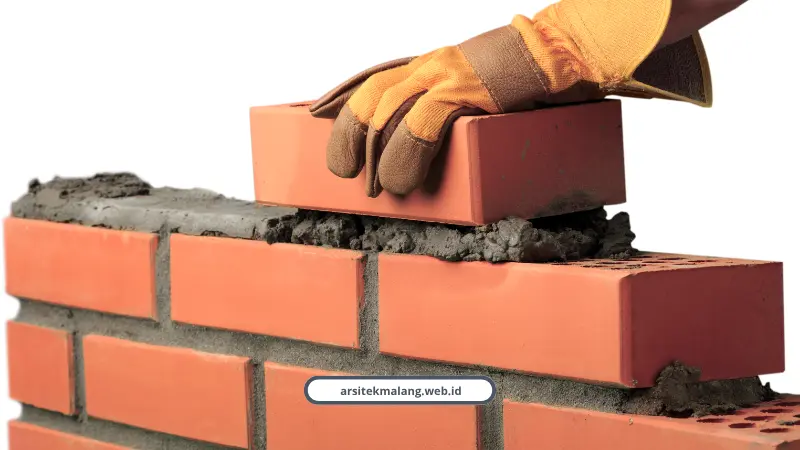

Ringkasan Inti
- Biaya bangun rumah 2 lantai di Malang 2026 terbagi tiga kelas: sederhana (Rp3,5–4,2 juta/m²), menengah (Rp4,5–6,0 juta/m²), dan mewah (di atas Rp6,5 juta/m²).
- Alokasi anggaran fisik didominasi pekerjaan struktur utama 35–40%, dinding & atap 25–30%, finishing arsitektural 20–25%, serta mekanikal elektrikal (MEP) 8–12%.
- Tarif jasa desain arsitek berkisar Rp70.000–Rp150.000/m² (5–8% dari total RAB), terbukti memangkas risiko biaya siluman dan bongkar-pasang hingga 20%.
- Penggunaan dinding bata ringan (hebel) lebih hemat biaya terpasang (Rp100.500 vs Rp108.000/m²) dengan bobot 600 kg/m³ yang jauh lebih aman terhadap gaya gempa.
- Retribusi resmi PBG berkisar Rp1,5–5 juta via sistem SIMBG dengan dokumen DED teknis berstandar Perbup Malang No. 10 Tahun 2025.
Daftar Isi Artikel
- Kisaran Biaya Bangun Rumah 2 Lantai per Meter Persegi di Malang
- Biaya Jasa Desain Arsitek untuk Rumah 2 Lantai
- Lebih Hemat Mana, Dinding Bata Merah atau Bata Ringan?
- Biaya Mengurus PBG Rumah 2 Lantai di Malang 2026
- Apakah Budget Rp50 Juta Cukup untuk Bangun Rumah 2 Lantai Penuh?
- Harga Material Utama Bangun Rumah di Malang Awal 2026
Biaya rumah 2 lantai di Malang tahun 2026 berkisar Rp3,5 juta sampai lebih dari Rp6,5 juta per meter persegi, tergantung kelas bangunan. Angka ini belum termasuk jasa desain dan biaya legalitas PBG.
Pertanyaan paling sering saya terima bukan soal desain, tapi soal duit. "Budget saya segini, cukup nggak buat rumah 2 lantai?"
Jujur saja, jawabannya tergantung banyak variabel. Tapi biar nggak meraba-raba, saya kasih rincian angkanya di bawah ini.
Kisaran Biaya Bangun Rumah 2 Lantai per Meter Persegi di Malang
Biaya konstruksi di Malang terbagi tiga kelas, mulai dari sederhana sampai mewah, tergantung spesifikasi material dan finishing yang dipilih.
- Kelas sederhana, Rp3,5 sampai 4,2 juta per meter persegi
- Kelas menengah, Rp4,5 sampai 6,0 juta per meter persegi
- Kelas mewah, di atas Rp6,5 juta per meter persegi
Dari total anggaran itu, alokasinya kira-kira begini. Struktur utama seperti pondasi, kolom, balok, dan dak beton menyerap 35 sampai 40 persen. Pekerjaan dinding dan atap 25 sampai 30 persen.
Finishing arsitektural 20 sampai 25 persen. Sisanya instalasi MEP 8 sampai 12 persen.
Untuk simulasi nyata, rumah tipe 36 yang ditingkat jadi 2 lantai biasanya butuh Rp150 sampai 300 juta. Sementara rumah ukuran 6x12 meter dengan luas 72 meter persegi butuh Rp230 sampai 350 juta.
Muhammad Musyaffa dari tim riset kami mengingatkan soal pentingnya dokumen sebelum eksekusi.
"Penggunaan gambar kerja arsitektur DED dan dokumen RAB definitif merupakan langkah krusial untuk mencegah pembengkakan biaya tak terduga hingga 20 persen. Meskipun kawasan topografi datar seperti Kedungkandang menghemat biaya galian, pemilik rumah tetap wajib melakukan pengecekan kedalaman tanah keras pada area bekas persawahan agar tidak terjadi penurunan pondasi sepihak."
Biaya Jasa Desain Arsitek untuk Rumah 2 Lantai
Tarif jasa desain arsitek di Malang umumnya Rp70.000 sampai Rp150.000 per meter persegi, atau setara 5 sampai 8 persen dari total RAB pembangunan.
Semakin lengkap paket gambar yang diambil, semakin detail juga dokumen yang didapat. Paket lengkap biasanya mencakup gambar arsitektur, rencana pondasi, kolom, pembalokan, detail struktur, sampai dokumen RAB siap pakai.
Kami di layanan lengkap kami menyediakan paket jasa arsitek 3D dengan DED komplit dan render 4K, plus opsi lanjut ke kontraktor turnkey bergaransi struktur 100 persen.

Lebih Hemat Mana, Dinding Bata Merah atau Bata Ringan?
Bata ringan atau hebel sedikit lebih hemat biaya terpasang dibanding bata merah, plus bobotnya jauh lebih ringan sehingga lebih aman untuk struktur lantai dua.
- Material batu, bata merah Rp56.000 vs bata ringan Rp75.000
- Material perekat, bata merah Rp22.000 vs bata ringan Rp5.500
- Upah tenaga kerja, bata merah Rp30.000 vs bata ringan Rp20.000
- Total biaya terpasang per m2, bata merah Rp108.000 vs bata ringan Rp100.500
Selisih Rp7.500 per meter persegi memang kelihatan kecil. Tapi yang lebih penting, berat jenis hebel cuma 600 kg per meter kubik, dibanding bata merah yang 1.500 sampai 1.700 kg per meter kubik.
Bobot yang jauh lebih ringan ini mengurangi beban mati pada struktur lantai dua dan pondasi. Efeknya, rumah jadi relatif lebih aman terhadap gaya gempa.
Catatan Arsitek Malang
Untuk dinding lantai dua, pemilihan bata ringan (hebel) adalah strategi rekayasa nilai (value engineering) terbaik. Bobotnya yang 60% lebih ringan mereduksi dimensi balok dan kolom struktur lantai bawah, sehingga Anda bisa menghemat pembesian tulangan dan beton cor secara signifikan.
Biaya Mengurus PBG Rumah 2 Lantai di Malang 2026
Retribusi resmi PBG untuk rumah tinggal sederhana berkisar Rp1.500.000 sampai Rp5.000.000, dihitung otomatis lewat sistem SIMBG berdasarkan luas, fungsi, dan Perda setempat.
Dokumen yang wajib disiapkan meliputi gambar teknis DED untuk arsitektur, struktur, dan MEP, Keterangan Rencana Kota, sampai e-materai. Acuan resminya mengikuti Peraturan Bupati Kabupaten Malang Nomor 10 Tahun 2025 tentang Standar Harga Satuan.
Kalau Anda ingin memastikan seluruh dokumen ini lolos verifikasi tanpa bolak-balik revisi, keterlibatan jasa arsitek rumah 2 lantai berlisensi sejak awal jauh lebih aman dibanding mengurusnya sendiri belakangan.
Apakah Budget Rp50 Juta Cukup untuk Bangun Rumah 2 Lantai Penuh?
Tidak cukup untuk renovasi 2 lantai secara penuh. Budget sekitar Rp50 juta hanya cocok untuk penambahan skala kecil seperti mezzanine atau atap tambahan, bukan penambahan lantai utuh.
Untuk renovasi 2 lantai yang layak huni dengan struktur lengkap, siapkan minimal di kisaran Rp150 juta ke atas tergantung luas dan spesifikasi. Durasi pengerjaannya sendiri rata-rata 3 sampai 6 bulan.
Harga Material Utama Bangun Rumah di Malang Awal 2026
Harga semen 50 kg berkisar Rp55.000 sampai Rp75.000, besi beton 8 mm sepanjang 12 meter Rp85.000 sampai Rp110.000, dan beton readymix K-225 Rp950.000 sampai Rp1.150.000 per meter kubik.
- Bata merah press, Rp700 sampai Rp1.200 per biji
- Bata ringan ukuran 60x20x7,5 cm, Rp550.000 sampai Rp750.000 per meter kubik
- Pasir pasang, Rp180.000 sampai Rp300.000 per meter kubik
- Keramik granit 60x60, Rp120.000 sampai Rp250.000 per dus
Harga ini bisa bergeser tergantung lokasi pembelian dan fluktuasi pasar. Yang penting, RAB awal dihitung dengan asumsi realistis, bukan angka optimis yang bikin kaget di tengah proyek.
Konsultasikan Rencana Anggaran Biaya Rumah Anda
Dapatkan estimasi RAB transparan, gambar kerja DED presisi, dan pendampingan PBG bersama arsitek profesional kami.

Naura Regyna Putri
Penulis & Tim Riset Arsitektur Maroon Arsitek Malang, spesialis estimasi biaya konstruksi, RAB presisi, dan legalitas PBG/SIMBG Malang Raya.